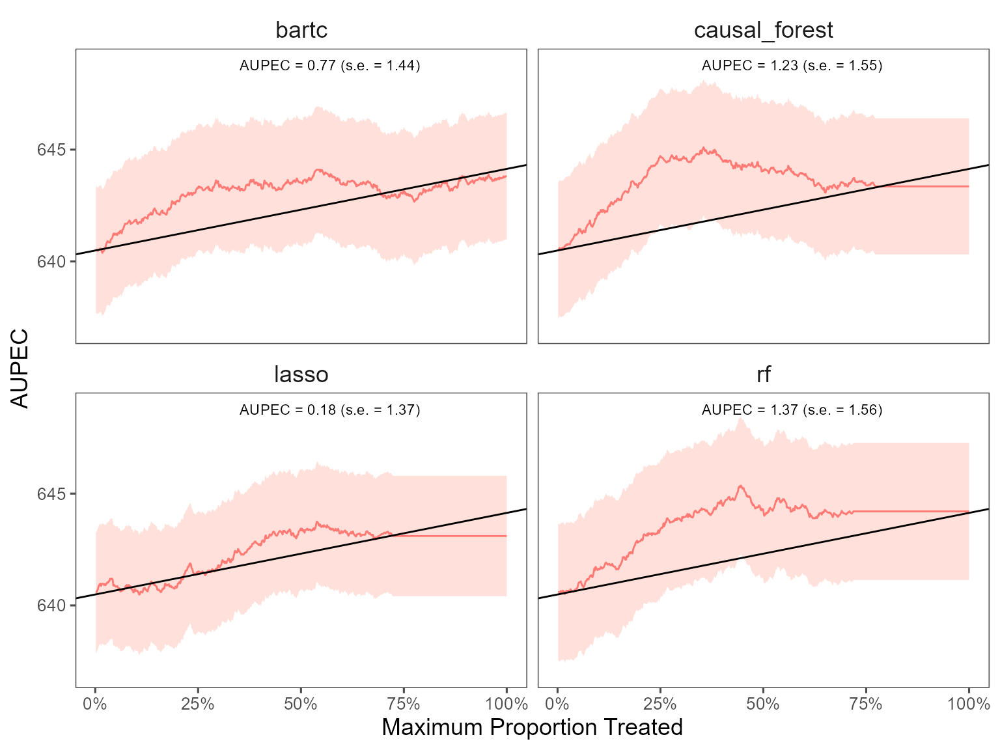

Cross-validation with multiple ML algorithms
Source:vignettes/cv_multiple_alg.Rmd
cv_multiple_alg.RmdWe can estimate ITR with various machine learning algorithms and then
compare the performance of each model. The package includes all ML
algorithms in the caret package and 2 additional algorithms
(causal
forest and bartCause).
The package also allows estimate heterogeneous treatment effects on
the individual and group-level. On the individual-level, the summary
statistics and the AUPEC plot show whether assigning individualized
treatment rules may outperform complete random experiment. On the
group-level, we specify the number of groups through ngates
and estimating heterogeneous treatment effects across groups.
library(evalITR)
# specify the trainControl method
fitControl <- caret::trainControl(
method = "repeatedcv",
number = 3,
repeats = 3)
# estimate ITR
set.seed(2021)
fit_cv <- estimate_itr(
treatment = "treatment",
form = user_formula,
data = star_data,
trControl = fitControl,
algorithms = c(
"causal_forest",
"bartc",
# "rlasso", # from rlearner
# "ulasso", # from rlearner
"lasso", # from caret package
"rf"), # from caret package
budget = 0.2,
n_folds = 3)
#> Evaluate ITR with cross-validation ...
#> fitting treatment model via method 'bart'
#> fitting response model via method 'bart'
#> fitting treatment model via method 'bart'
#> fitting response model via method 'bart'
#> fitting treatment model via method 'bart'
#> fitting response model via method 'bart'
# evaluate ITR
est_cv <- evaluate_itr(fit_cv)
# summarize estimates
summary(est_cv)
#> ── PAPE ────────────────────────────────────────────────────────────────────────
#> estimate std.deviation algorithm statistic p.value
#> 1 0.954 0.82 causal_forest 1.168 0.24
#> 2 -0.026 0.49 bartc -0.054 0.96
#> 3 0.173 1.07 lasso 0.162 0.87
#> 4 1.266 0.95 rf 1.335 0.18
#>
#> ── PAPEp ───────────────────────────────────────────────────────────────────────
#> estimate std.deviation algorithm statistic p.value
#> 1 2.55 0.65 causal_forest 3.91 9.2e-05
#> 2 1.20 0.79 bartc 1.52 1.3e-01
#> 3 -0.21 0.63 lasso -0.33 7.4e-01
#> 4 1.69 1.11 rf 1.52 1.3e-01
#>
#> ── PAPDp ───────────────────────────────────────────────────────────────────────
#> estimate std.deviation algorithm statistic p.value
#> 1 1.35 0.98 causal_forest x bartc 1.38 0.16772
#> 2 2.76 0.80 causal_forest x lasso 3.46 0.00054
#> 3 0.87 0.71 causal_forest x rf 1.22 0.22292
#> 4 1.41 1.06 bartc x lasso 1.32 0.18535
#> 5 -0.49 1.06 bartc x rf -0.46 0.64854
#> 6 -1.89 0.72 lasso x rf -2.62 0.00892
#>
#> ── AUPEC ───────────────────────────────────────────────────────────────────────
#> estimate std.deviation algorithm statistic p.value
#> 1 1.43 1.5 causal_forest 0.92 0.36
#> 2 0.96 1.5 bartc 0.63 0.53
#> 3 0.18 1.4 lasso 0.13 0.90
#> 4 1.37 1.6 rf 0.88 0.38
#>
#> ── GATE ────────────────────────────────────────────────────────────────────────
#> estimate std.deviation algorithm group statistic p.value upper lower
#> 1 -118.1 59 causal_forest 1 -2.013 0.044 -3.1 -233
#> 2 27.0 59 causal_forest 2 0.454 0.650 143.5 -90
#> 3 60.9 59 causal_forest 3 1.034 0.301 176.4 -55
#> 4 7.6 59 causal_forest 4 0.128 0.898 123.7 -109
#> 5 40.9 99 causal_forest 5 0.411 0.681 235.8 -154
#> 6 -1.2 59 bartc 1 -0.021 0.984 115.2 -118
#> 7 -98.4 59 bartc 2 -1.665 0.096 17.4 -214
#> 8 -10.2 88 bartc 3 -0.116 0.908 163.1 -184
#> 9 100.8 59 bartc 4 1.706 0.088 216.7 -15
#> 10 27.2 98 bartc 5 0.279 0.780 218.4 -164
#> 11 -14.4 94 lasso 1 -0.154 0.878 169.2 -198
#> 12 -94.5 90 lasso 2 -1.051 0.293 81.8 -271
#> 13 87.9 99 lasso 3 0.886 0.376 282.4 -107
#> 14 12.6 59 lasso 4 0.214 0.830 127.8 -103
#> 15 26.6 59 lasso 5 0.451 0.652 142.4 -89
#> 16 -37.4 59 rf 1 -0.638 0.523 77.5 -152
#> 17 10.6 59 rf 2 0.180 0.857 126.5 -105
#> 18 -17.6 59 rf 3 -0.299 0.765 97.7 -133
#> 19 66.5 86 rf 4 0.770 0.441 235.9 -103
#> 20 -3.9 60 rf 5 -0.066 0.948 113.0 -121We plot the estimated Area Under the Prescriptive Effect Curve for the writing score across different ML algorithms.
# plot the AUPEC with different ML algorithms
plot(est_cv)